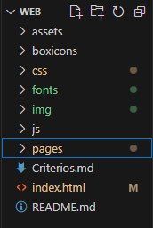

Codigo
Aquí daremos una breve explicación sobre la elaboración de este código:
El propósito de la elaboración de este código fue para explicar la relación entre un sistema de ventilación con sensor de temperatura con el calculo diferencial a forma de página web
Al momento de elaborar este código hubo algunos problemas como la falta de información para empezar la parte informativa de la página, la elaboración del menú y la búsqueda de artículos que respalden toda la información
Este código fué realizado utilizando los siguientes lenguajes:

| Lenguaje | Porcentaje usado |
|---|---|
| HTML | 13.5% |
| CSS | 85.9% |
| JS | 0.6% |
La estructura de nuestro código es el siguiente:

Cuenta con un total de 5 archivos HTML, 4 CSS, 2 JS y